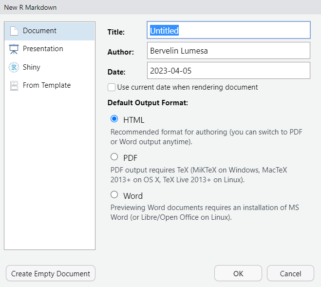
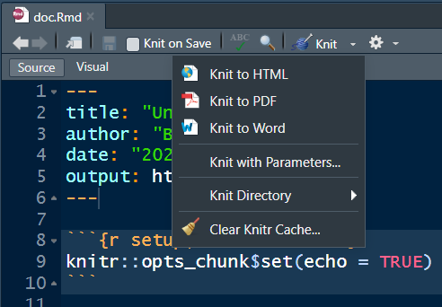
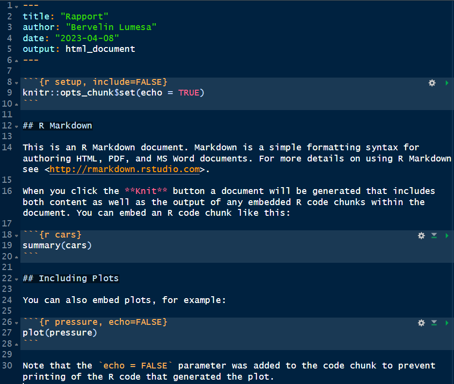
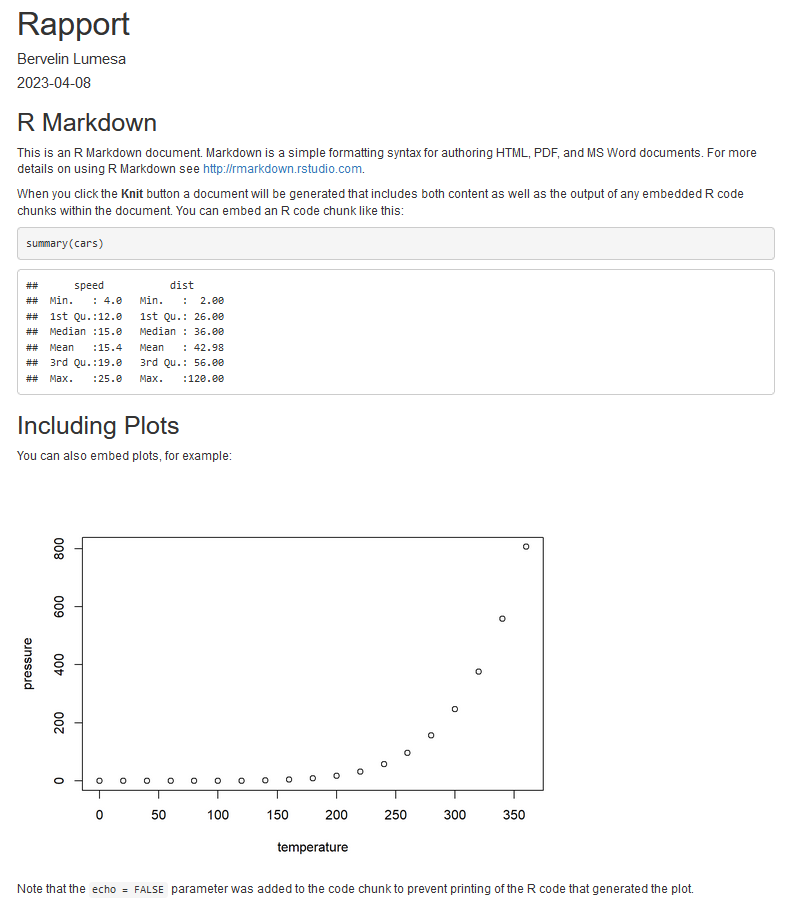
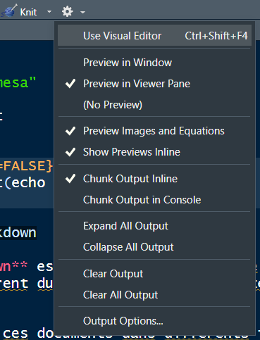
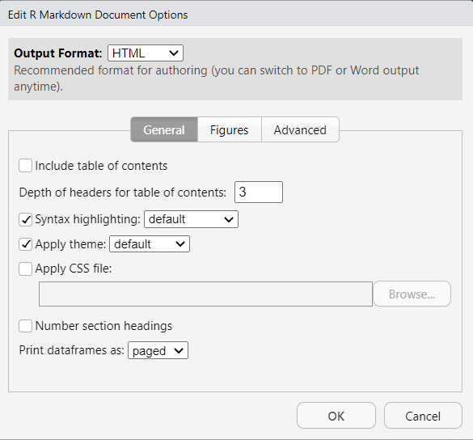
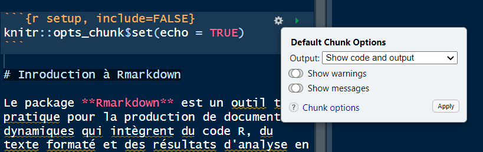

install.packages("Rmarkdown")2 Inroduction à Rmarkdown
Le package Rmarkdown est un outil très pratique pour la production de documents dynamiques qui intègrent du code R, du texte formaté et des résultats d’analyse en un seul document. Il permet d’exporter ces documents dans différents formats tels que HTML, PDF, Word, etc., facilitant ainsi leur partage et leur diffusion.
Avec Rmarkdown, les analyses sont plus faciles à comprendre et à reproduire, car le code et les résultats sont présentés de manière claire et cohérente.
De plus, Rmarkdown offre une grande flexibilité et permet de personnaliser l’apparence et la mise en page de manière rapide et facile.
Avant toute chose, il faut d’abord installer le package Rmarkdown si cela n’est pas encore le cas. Cela demande une connexion internet.
2.1 Créer un document Rmarkdown
Un document R Markdown est simplement un fichier texte enregistré avec l’extension .Rmd. Avec RStudio, on peut créer un nouveau document en allant dans le menu File puis en choisissant New file puis R Markdown…. La boîte de dialogue de la figure 2.1 s’affiche. Cliquez ensuite sur OK.

2.2 Eléments d’un documents Rmarkdown
Un document Rmarkdown comporte génalement trois parties. Il s’agit d’un en-tête, le texte di document et du code R.
2.2.1 En-tête du document
L’en-tête constitue la première partie du document. Il se trouve au début du document et est délimité par les trois tirets avant et après.
---
title: "Untitled"
author: "Bervelin Lumesa"
date: "2023-04-05"
output: html_document
---Cette partie est très importante car elle contient des informations éssentielles sur le document comme son titre, le nom de l’auteur, la date de création et d’autres options permettant de personnaliser le document. L’option output: html_document permet de générer un document au format HTML.
2.2.2 Texte du document
C’est la partie du document où nous retrouvé du texte suivant la syntaxe Markdown. Avec Markdown, on peut facilement ajouter des titres, des listes, des liens, des images, et même des tableaux, en utilisant des symboles simples comme des astérisques, des crochets et des parenthèses. Le résultat final est un texte formaté de manière lisible
Le code suivant montre comment mettre du texte en italique, en gras. Il montre comment créer des listes, des titres, des liens.
| Rmarkdown | Résultats |
|---|---|
|
Titre 1Titre 4 |
*italique* |
italique |
gras |
gras |
|
|
|
|
[Google](https://google.com) |
2.2.3 Codes R
Le document Rmarkdown peut contenir des blocs de code R à l’aide des codes chuncks qui consistent à délimiter les codes au début avec ```{r} et ``` à la fin.
2.3 Compiler le document Rmarkdown
Pour compiler le document et générer le fichier de sortie, il suffit de cliquer sur la petite flèche de l’option Knit comme montré sur l’image suivante :

Vous pouvez alors choisir le format de fichier de sortie que vous désirez. Une fois choisi, le fichier est généré automatiquement.
L’image suivante montre un document compilé sous format html.


Document compilé
2.4 Différents paramètres
2.4.1 Paramètres du document
Pour accéder aux paramètres du document, il suffit de cliquer sur la petite flèche à côté de l’icône d’engrenage et à sélectionner la dernière option Output Options.... La boîte de dialogue qui s’affiche permet par exemple d’inclure la table de matières (Include table of contents), de changer le thème (Apply theme), de définir si les sections du documents seront numérotées (Number section headings). Il est même possible d’inclure un fichier CSS (Apply CSS file).


Paramètres du document
2.4.2 Paramètres du bloc de code R
2.4.2.1 Options globales
On peut vouloir appliquer une option à l’ensemble des blocs d’un document. Par exemple, on peut souhaiter par défaut ne pas affcher le code R de chaque bloc dans le document final.
En créant le document Rmarkdown comme nous l’avons vu au début, R Rstudio inclue automatiquement un bloc de code pour les options globales. Ce bloc débute avec la ```{r setup, include=FALSE}
Comment alors modifier ces différentes options ?
On peut modifier les options manuellement en éditant l’en-tête du bloc de code, mais on peut aussi utiliser une petite interface graphique proposée par RStudio. Pour cela, il sufft de cliquer sur l’icône d’engrenage située à droite sur la ligne de l’en-tête de du bloc comme sur l’image :

Cela permet de modifier quelques options que nous reprenons dans le tableau ci-dessous :
| Options | Valeurs | Description |
|---|---|---|
| echo | TRUE/FALSE | Afficher ou non le code R dans le document |
| eval | TRUE/FALSE | Exécuter ou non le code R à la compilation |
| include | TRUE/FALSE | Inclure ou non le code R et ses résultats dans le document |
| warning | TRUE/FALSE | Afficher ou non les avertissements générés par le bloc |
| message | TRUE/FALSE | Afficher ou non les messages générés par le bloc |
2.4.2.2 Options individuelles
Dans chaque bloc, il est aussi possible de modifier des options. Comme pour le bloc global, il sufft de cliquer sur l’icône d’engrenage située à droite sur la ligne de l’en-tête de chaque bloc.
On peut aussi nommer un bloc en indiquant son nom juste après le r : {r nom_du_bloc}. Cela permet par exemple en cas d’erreur lors de la compilation, d’identifier facilement le bloc à problème.